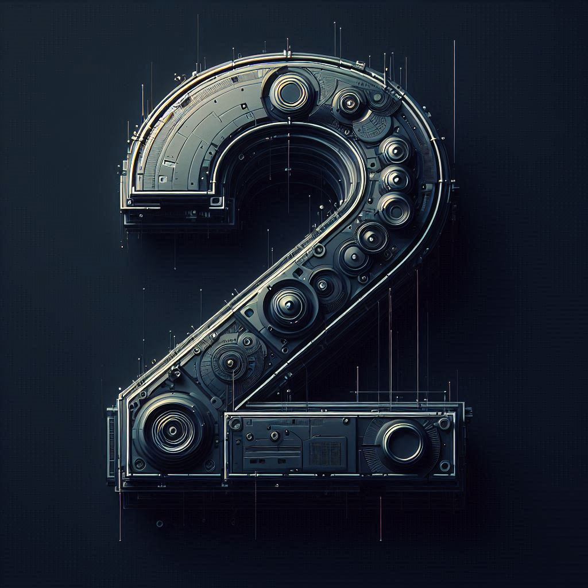

Didier Knecht - 1 - 2025
DownloadView the tracklisting
- KiNK - Strings - CLONE ROYAL OAK 32
- Pinto (NYC) - Dangerous - JACK CITY RECORDS 004
- Raw Instinct - De La Bass (Mousse T.'s House Mix) - DO IT MUSIC 0630
- Hodge - Silo - MOTHER'S FINEST 001
- Projam - Into The Groove - RUNNING BACK 006
- Co-Fusion - Low-Flying - HARTHOUSE 033
- Dubfire & Flug - Algorithm - DCLTD 26S
- Flug - Black Out - REKIDS RSPX 34
- X-Press 2 - AC/DC (Guy J Remix) - LOST & FOUND 038D
- Bart Skils & Weska - Lost on You - DRUMCODE 208
- Jon Hester - Stealth - REKIDS 174
- Krystal Klear - Future Fantasy - RUNNING BACK 862
- Stanny Abram - Racku - TOKYO SINDROME 046
- Claude VonStroke - Waddaday - DIRTYBIRD 219
- Madben - Atlantis - ELLUM 065
- Martin Landsky - 1000 Miles (Laurent Garnier Remix) - POKER FLAT RECORDINGS 02
- Planetary Assault Systems - Raww - COCOON RECORDINGS DIGITAL 049
- Rex The Dog - Hold It-Control It - KOMPAKT 385
- The Southern - Dynamic Brains - TRONIC 304
- Alex Niggemann - Angular - AEON 021
- Astin - Dejected (Paul C & Paolo Martini Remix) - SNATCH! RECORDS 016
- Bryan Zentz - Empraxa - M_NUS MIN15
- DBX - Losing Control - PEACEFROG RECORDS 022
- Das SPEZIAL - Romantic Schizophranic - SPEZIAL 01
- Duoteque - Gotcha - BOXER RECORDINGS 076
- Echonomist - MS20101 - INNERVISIONS 94
- Gel Abril & Andrea Oliva - Scene - BE AS ONE 005
- Gregor Tresher - Substance - GTO RECORDINGS 003
- Jeroen Search - Inner Call - TOKEN 92D
- Marc Houle - Here We Are - ITEMS & THINGS 048
- Mark Broom - AR-4 - TOKEN 96D
- Rico Puestel - Exhibit 1.3 - EXHIBITION 01
- Rico Puestel - Perpetua Mobilia - COCOON RECORDINGS DIGITAL 047
- Shaded (LA) - Attitudes - TURBO RECORDINGS 059
- Southsoniks - Per Aspera - A-TRACTION 054
- Steve Rachmad - Sabre Song - BASS CULTURE RECORDS 051
- Damian Lazarus & The Ancient Moons - Trouble At The Seance (Kolsch Remix) - CROSSTOWN REBELS 158
- Format:B - Vivian Wheeler - STIL VOR TALENT 015
- Frank Lorber - L'Obscure Objet Du Desir - COCOON RECORDINGS 10INCH 011
- George Morel - Let's Groove (Claptone Remix) - GET PHYSICAL MUSIC 238
- Grand Corporation feat. Jeremy Glenn - Wonder & Amazement (Deetron Remix) - CLASSIC 189
- Heartthrob - Never Wanted One - ISNISNT 03
- Kölsch - KIR - KOMPAKT EX 093
- La Fleur - Nightflow (Kenny Larkin Drama Mix) - WATERGATE RECORDS 013
- Lee Van Dowski - 05.05.04 - MOBILEE 000
- Lee Van Dowski - WWW - COCOON RECORDINGS LP 038
- Maceo Plex - Conjure Balearia - ELLUM AUDIO 018
- Matthias Meyer - LA Strings - WATERGATE RECORDS 030
- Paolo Rocco - That I Am - REAL TONE RECORDS 057
- Redshape - Leaves (Rotated Mix) - RUNNING BACK 050
- Ricardo Tobar - La Condamine - MUSAR RECORDINGS 001
- Roman Lindau - Move - SECOND STATE 021
- Undercatt - Golden Area - DIYNAMIC MUSIC 02
- Danilo Vigorito - Dressing Up - ADAGIO 001 LP PART1
- Floom - Jura - SYNEWAVE 92
- Johannes Heil - Artology (Destillat Remix) - KLANG ELEKTRONIK 111
- Matt John - Radio Self - PERLON 72
- Plasmic Honey - Jungle (Martinez Peak Time Remix) - SCI + TEC DIGITAL AUDIO 18
- Kriz - Vortex - BLUEPRINT RECORDS 064
- Arnaud Le Texier - Puzzlin - SOMA RECORDS 672
- Atlanthes - Volver - RIFT 009
- Axel Karakasis - Clutter - REMAIN RECORDS 017
- Axel Karakasis - Fearful Stone - REMAIN RECORDS 160
- Axel Karakasis - Impact - REMAIN RECORDS 157
- DJ Dextro - Just Not Enough - SUARA 509
- Hertz - Alfons - SUARA 502
- Hertz - Lush Pad - SWAY LP3
- Keith Carnal - Exorcism - SECOND DEGREE 009
- Keith Carnal - Heroism - SECOND DEGREE 009
- Louis The 4th - Protecto - PLANET RHYTHM 109
- Louis The 4th - Shelter - PLANET RHYTHM 109
- Mython - Cold To The Touch (Empty Mix) - DIFFERENTSOUND 023
- Pfirter - Access - PARALELO 021
- Rødhåd - Lavande 02 - WSNWG 014
- Stefano Memia - LDV2 - DIFFERENTSOUND 005II
- Takt - Triple Point - DIFFERENTSOUND 005
- The Advent - Bad Transfer - MORD 107
- The Advent - Two Zero One - SYNTHETIK SOUNDS 004
- The Advent - Two Zero Three - SYNTHETIK SOUNDS 004
- Yigitoglu & KVTS - Sundowner - SYNTHETIK SOUNDS 006
- Zisko - The Wolfpack Ceremony - UNCAGE 058

Didier Knecht - 2 - 2025
DownloadView the tracklisting
- Candido - Jingo (Dr Packer Rework) - SALSOUL RECORDS 4050538307474
- Dennis Ferrer - Transitions (Macromism Remix) - NITE GROOVES 422
- Hamza Rahimtula & Loopy Juice - Soumba Soumba - WIND HORSE RECORDS 052
- Joe Vanditti & Michel Tallè - Suite - IBIZA TALENTS 040
- Keith Carnal - Wiedergutmachung - BPITCH X017
- KiNK - Valentine's Groove - CLONE ROYAL OAK 32
- Malone & Calussa - Besame - ABRACADABRA 031
- Mihai Popoviciu - Breath Control - TBX RECORDS 33
- Nicole Moudaber & Alan T - The Volume - MOOD RECORDS 080
- Pier Bucci - Hay Consuelo (Samim Remix) - CROSSTOWN REBELS 031
- Pinto (NYC) - Dangerous - JACK CITY RECORDS 004
- Ronan Portela & Ariel Rodz - La Ensenada - AREA REMOTE 031
- Rory Marshall - Don't Diss the 909 (Extended Mix) - BUSH 4090
- Round Table Knights - Calypso (Horatio Edit) - MADE TO PLAY 025
- Rowetta & Gary Burrows - No Different - RESPEKT RECORDINGS 204
- Tektonauts & Armandd G - La Luna - NERVOUS RECORDS 25722
- Adana Twins - The Curve - WATERGATE RECORDS 084
- Charlotte De Witte - Kali - KNTXT 015
- Chris Liebing - Time - CLR 100
- Deas - Crypto - CLR 102
- Deas - Layer - PLANET RHYTHM 074
- Harvey Mckay - Black Spider - COCOON RECORDINGS DIGITAL 173
- Lerio Corrado - Overwrite - SECOND STATE 105
- M.I.T.A. - Dusty - TRONIC 431
- Robert Hood - Pattern St. - M-PLANT 43
- Sunil Sharpe - Amun - BPITCH X004
- The Rhythm Odyssey & Dr Dunks - El Cid - PHANTASY SOUND 114
- Thomas P. Heckmann - Contagion (BPC Edit) - BPITCH CONTROL 022PT4
- Burger / Ink - Love Is the Drug (Paris Texas) - MATADOR 334-1
- Lord Of The Isles - Xit - NAUTILUS RISING 001
- Maurizio - M7a - MAURIZIO M-7
- Soft Rocks - Look East - SOFT ROCKS RECORDINGS 004
- Thomas Brinkmann - Karin 1 - ERNST 06
- Bryn Green - Blown To Bits - PLANET RHYTHM 21106
- Confidential Recipe - Starter - REKIDS RSPX 31
- Dubfire & Flug - Algorithm - DCLTD 26S
- Dustin Zahn - Crimson Cheeks - REKIDS 192
- Jonathan Kaspar - Invert Drift - COCOON RECORDINGS DIGITAL 169
- Marcal - The Interloper - REKIDS RSPX 30
- Mark Broom & James Ruskin - Erotic Misery - BLUEPRINT 2021
- Oscar Mulero - Elektra - TOKEN 104D
- Procombo & Sterac - Orpheus - REKIDS RSPX 32
- Rene Wise - Marbles - MOTE EVOLVER 060D
- Stef Mendesidis - Sonica - KLOCKWORKS 33
- Truncate - First Phase (Planetary Assault Systems Remix) - TRUNCATE 22
- Truncate - Process - BLUEPRINT 2021
- DJ Rush - Get On Up (Dave Simon Edit) - PROPER TECHNO TUNES 005
- Marc Houle - Deckard 7 - ITEMS & THINGS 048
- Michael Klein - Continuation - COCOON RECORDINGS DIGITAL 047
- Michael Zager Band - Let's All Chant (Extended) - NOT ON LABEL
- Paul Kalkbrenner - Part Six - B1 G010003887912D
- Pig&Dan - Wasted - DRUMCODE 222B
- Robert Hood - Reflector - M-PLANT 31
- Samuel L Session - Dumbek - SYXT SPC001
- Sian - Freakuency (Marc Houle Remix) - OCTOPUS RECORDS 187
- Tiefschwarz - Green Light - SOUVENIR MUSIC 104
- Wighnomy Bros. - Wombat - CITY NOISES 269
- Yves Deruyter - Darkness - FILTH ON ACID 076
- Adam Beyer - Stone Flower - DRUMCODE 141
- Butch - Diss You - CECILLE NUMBERS 020
- Christian Smith - House This House - PLUS 8 RECORDS LTD 127
- Eduardo De La Calle - Pink Water - CADENZA 87
- Floorplan - Funky Souls - RUSH HOUR RECORDINGS 1
- Gerd - Still Believe - DFTD 023
- Hunzed & Harvey - Sheeta (Mendo Remix) - CLARISSE RECORDS 040
- Karuva - The Gunslinger - HYPE MUSIK 142
- Love Over Entropy - Finisterre - SOMETHING HAPPENING SOMEWHERE 010
- Peter Brown - Tearz (Charles Ramirez & Stan Garac Remix) - HALL OF FAME RECORDS 040
- San Proper - Leave It To The Doc - RUSH HOUR 13
- Cristian Vogel - Wind from Nowhere - NOVAMUTE77CD
- DJ W!LD - Cubana - OFF RECORDINGS 05
- Joey Beltram - Flash Cube - TRAX 5027
- Joey Beltram - The Next - TRAX 5027
- Kellerkind - Charly Braun - STILL VOR TALENT 053
- Kerri Chandler - Bar A Thym - NRK SOUND DIVISION 111
- The Godson - Analog Love - RUSH HOUR RECORDINGS 111
- Tikiman & Paul St. Hilaire & Rhauder - Skank (Cobblestone Jazz Reconstruction) - SUSHITECH 47
- Arjun Vagale - Function 88 - REKIDS RSPX 39
- Confidential Recipe - Fank Groove - REKIDS RSPX 49
- DJ Dextro - The Creator - TRONIC 444
- Drunken Kong - Strange Feeling - TRONIC 440
- Frank Biazzi - Confusion - TRONIC 441
- M.R.E.U.X. - Fokus - BLUMOOG 0162
- M.R.E.U.X. - Magic Button - BLUMOOG 0162
- Mark Broom - Game - REKIDS RSPX 35
- T Raum - Fusion - UPON YOU RECORDS 151
- Uncertain - Affection - KNEADED PAINS 127
- Uncertain - Escape - REKIDS RSPX 48
- D-Unity - Rebirth - UNITY RECORDS 228
- Filterheadz & Horatio - Bells Of Brightones - KNEADED PAINS 15
- Kriz - Nautilus (Marcal Remix) - TOKEN 112D
- Little Fritter - Spicy Boii - CLUB BAD 032
- Roman Adam - BTW - SENSO SOUNDS 094
- Second Skin - No Escape - BLUEPRINT RECORDS 066
- Second Skin - Reformed Theology - BLUEPRINT RECORDS 066
- Sigha - I Am Apathy, I Am Submission - BLUEPRINT RECORDS 2021
- Auggië - Kelly - VOKABULARIUM 004
- Calvin Clarke - Apollo - HOTTRAX 096
- Damian Lazarus & Gorgon City - Start Over (Reboot Remix) - CROSSTOWN REBELS 270R
- Friend Within - Pilka (Extended Mix) - TOOLROOM 11960
- Jay De Lys - Wild & Free - ELROW MUSIC 222
- Juanito - Tchoukar - HOTTRAX 095
- Laurent Garnier - Let The People Faire La Fete - COD 3 QR
- Laurent Garnier - On the REcorD (Part 3) - COD 3 QR
- Lorenzo De Blanck - Take Me High - HOTTRAX 093
- Mark Broom & Riva Starr - House Sound (Floorplan Extended Remix) - SNATCH! RECORDS 184
- Mattias Fridell & Alexander Johansson - Samband - H-PRODUCTIONS 122
- O.B - Se Puede - SNATCH! RECORDS OFF 069
- Solardo & Joshwa - VIP Business - INSOMNIAC RECORDS 0227B
- Christian Smith - Don't Stop - TRONIC 469
- Hertz - Elec - TRONIC 468
- Hertz - Fro Me Back - SWAY 36
- Pan-Pot & Hugh Betcha - Proto - SECOND STATE AUDIO 116
- Arnaud Le Texier - Pulsar - SOMA RECORDS 672
- Fixeer - Clutha - UNTERWELT 34